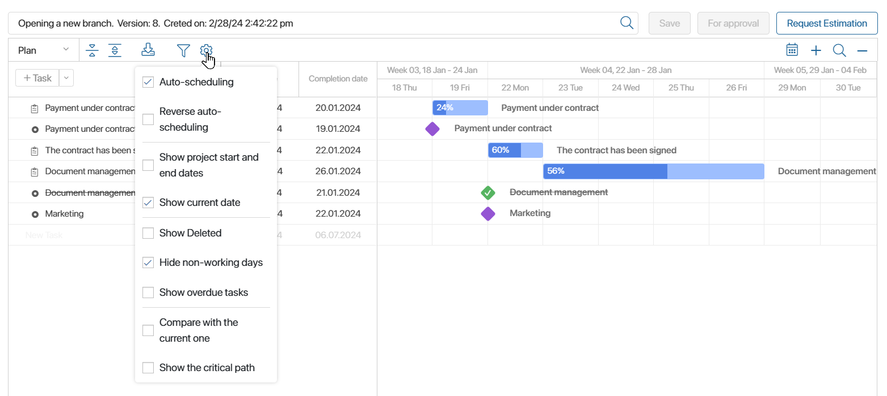
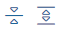
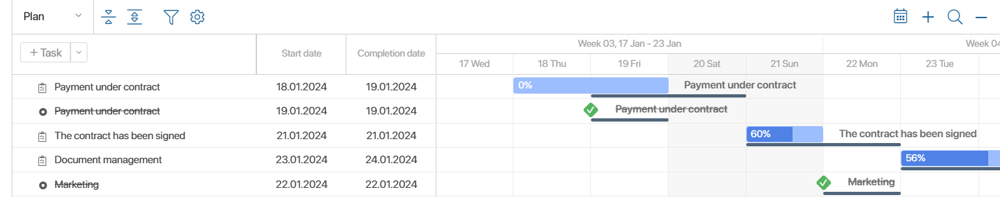
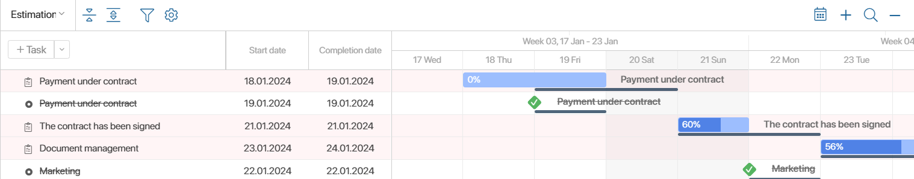
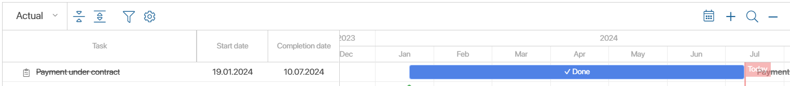
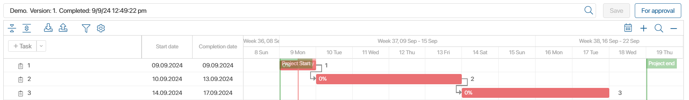
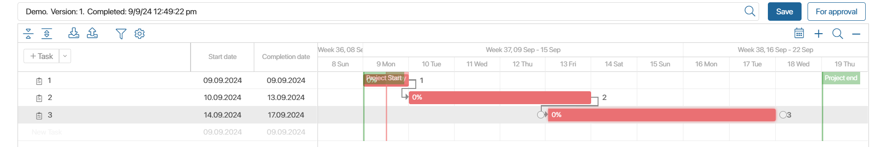
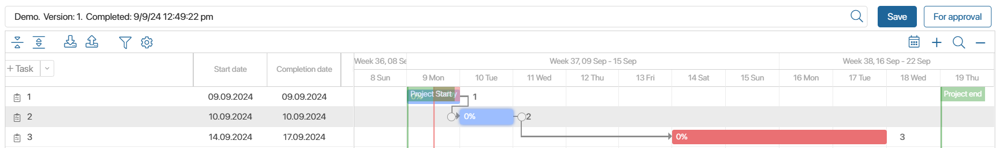
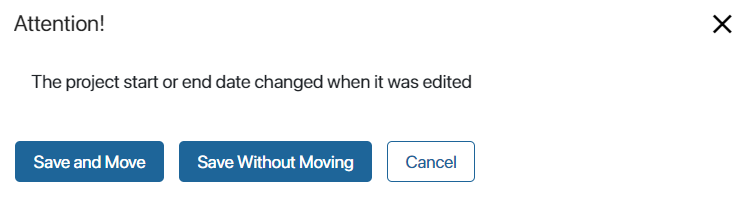

If you have the right to edit the plan, you can make changes to it. To do this, open the project page and in the Project Schedule widget click Edit. Depending on the settings set by the administrator, you can either edit the plan on the page tab itself or in a separate opened window. You can:
Use the toolbar that is placed above the plan chart.

After saving the changes, publish the plan or send it for approval if it is configured. When publishing, you can change the project deadline.
Please note that while one employee is making changes to the plan, editing is not available for other users.
Toolbar for editing the plan
You can perform the following actions:
- Select the project plan version you want to edit by clicking on the magnifying glass icon in the search field.
- Save. Create and save a plan draft.
- For Approval. Start the plan approval process. This button is available if project plan approval is set up in the system.
- Publish. Finish working on the project plan by publishing the draft. If plan approval is enabled, this option is only available for the approved version of the plan.
- Request estimation. Send a request to set estimated deadlines for tasks. This option is available for the published version of the plan and allows the executors to set the expected deadlines for tasks in the form of the received request.
- Display in the project plan the planned, estimated, or actual due dates of tasks of the Task and Milestones types. To do this, on the toolbar in the left corner, select the option:
- Plan. Show dates specified in task pages in the Start date* and Due date* fields. Once the project plan is published, these dates are approved for execution.
- Estimation. Show the forecast dates, i.e. the currently estimated due dates. They are set in task pages in the Start date (Estimated) and End date (Estimated) fields. The task executor can change these dates if they receive a corresponding request.
- Received. Show the dates of the actual completion of tasks. In this case, the start dates will be displayed as planned. Please note, that the project plan in this mode is available for reading only.
- Click  to show or hide all subtasks in the task list.
- Click to import the project plan as an .mpp file.
- Click to export the project plan as an .mpp file.
- Click to switch to the current date in the chart.
- Click to change the period displayed in the chart. The plan can be broken down into the following time periods: day, week, month, quarter, or year.
- Click to open the search window, enter search parameters, and sort project plan items in the chart, considering their nesting. The system administrator can define fields for sorting.
- Click to open the menu of options for auto-scheduling and displaying additional data in the chart. Read their description below.
Auto-scheduling and data display options
Click the gear icon on the toolbar to access the following options:
- Auto-scheduling. This option is enabled by default and automatically reschedules the dates of linked tasks to a later date.
- Reverse auto-scheduling. Enabling this option allows you to automatically reschedule the dates of linked tasks to an earlier date.
Let’s explain the work of these options by examples. Suppose you have created and linked two tasks. On the plan, they are placed one after another. In this case, the second task will start as soon as the first task is completed.
If Auto-scheduling is enabled, you can change the start date of the first task by moving it forward. To keep the link between the tasks, the start date of the second task will change automatically, also moving it forward in the calendar.
If Reverse auto-scheduling is enabled, once you change the start of the second task for an earlier date, the start date of the first task automatically reschedules for an earlier date, too.
Please note that if the Use the business calendar option is enabled in the project settings, and the end date of a linked task is a non-working day:
- With auto-scheduling, the end date will be changed to the first business day after the non-working day.
- With reverse auto-scheduling, the end date will be changed to the closest business day before the non-working day.
- Show project start and end dates. Enable this option if you want the chart to show the start and end of the project.
- Show current date. Enable this option if you want the chart to show the current date.
- Show deleted. Display the plan tasks that were deleted in the current draft before it was published. You can restore these tasks. They can be seen only in the plan editing mode.
- Hide non-working days. Enable this option to hide all non-working days in the plan. It is available if the Use the business calendar option is enabled for the project.
- Show overdue tasks. This option highlights overdue tasks.
- Compare with the current one.
- Show the critical path.
- Hide executed. Hide completed tasks. In this case, the executed parent task with the Task type will be displayed if it has unfinished subtasks.
To exit edit mode and return to the project page, click .
Compare with the current one
This option displays the planned dates of tasks in the published version to compare them with the new due dates in the current draft, as well as with the estimated or received dates. The planned ones will be marked with a dark gray line. Please note that only data from the published version of the plan can be additionally shown in the chart. Use the option in the following cases:
- If you have changed the due dates of tasks in the new version of the plan, you can easily compare them with the due dates of the published version. To do this, enable the Compare with the current one option in the draft plan.

- If you want to compare the estimated dates of tasks with the planned ones, select the Estimation option on the toolbar. The estimated due dates will be displayed in the chart. Then enable the Compare with the current one option to show the planned deadlines on the same chart.

- To compare the actual completion dates with the planned dates, select the Actual option from the toolbar. The chart will display the end dates when those responsible clicked the Done button in their tasks. Then enable the Compare with the current one option to show the planned dates in the same chart. In the example below, you can see that the task is actually completed one day earlier than the planned date.

Show the critical path
A critical path is a sequence of linked tasks on which the project completion date directly depends. If any task on a critical path is late, the entire project is delayed.
Enable the Show the critical path option to highlight in red the tasks on the chart that are completed right before the project end date or later. Linked tasks will also be highlighted if their deadlines overlap or if one task is completed the day before the previous task. For example:
- Task 3 is completed right before the project end date (September 17 and 18). Task 2 is linked to it. It is completed right before the start date of task 3. Tasks 1 and 2 have the same difference in start and completion dates. Therefore, all three tasks will make up the critical path of the project.

- The dates of linked tasks 2 and 3 overlap, all three tasks are part of the critical path.

- Task 2 is completed four days earlier than task 3 start date (September 10 and 14). Therefore, task 2, as well as its linked task 1, are not included in the critical path.

Change project due dates
If you have changed the due dates of the plan tasks, they may be outside the project due dates. Then, when you publish the changes, select the next action in the opened window:

- Publish the plan and move the project due dates to match the changes in the due dates of the plan tasks.
- Publish the plan and leave the project due dates unchanged.
- Cancel the publication and return to editing the plan.
If the plan is published during the approval business process, the option to change the project timeline is not automatically applied.